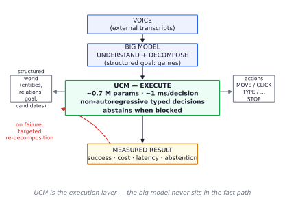
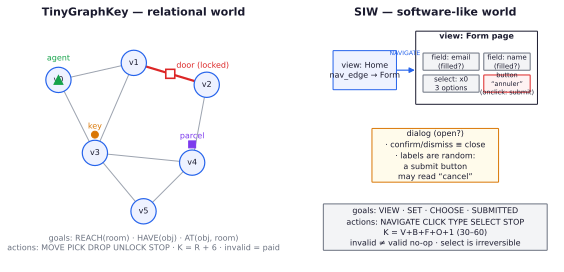
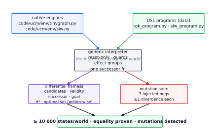
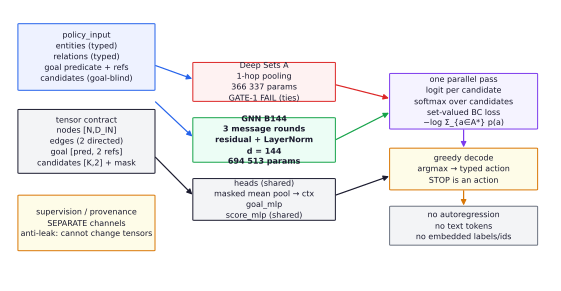
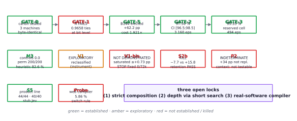
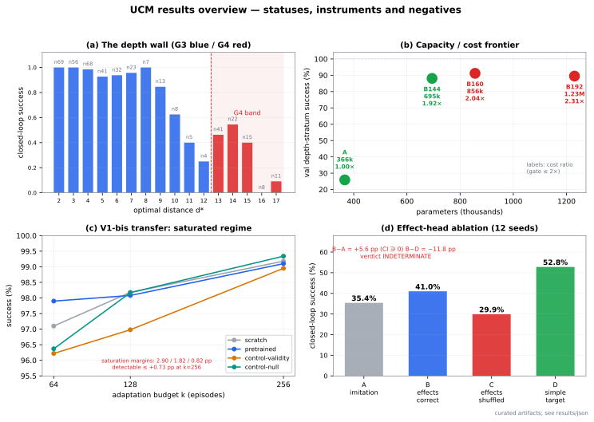

Technical report — version 1.0 · 2026-09-25
Author: cgarrot · Status: pre-publication, private repository · Snapshot: commit a47f7b7 of the working repository
Epistemic status. This paper is a laboratory log with formal claims, not a polished success story. Every quantitative claim below is tagged [ESTABLISHED] (pre-registered, sealed evaluation, independent audit), [EXPLORATORY] (measured but not confirmatory), or [NOT ESTABLISHED] (failed or inconclusive). Negative results and errata are reported at the same level of detail as positive ones. Section 11 documents the research-integrity machinery that produced this ledger.
We study whether a very small non-autoregressive policy operating on structured observations can reliably execute multi-step tasks — fast, cheaply, and with an explicit abstention channel — in worlds whose interfaces are fully specified and exactly solvable. We introduce TinyGraphKey (TGK), a deterministic relational world with a lockable door and three goal predicates (REACH, HAVE, AT), and SIW (Synthetic Interaction World), a software-like world of views, forms, fields, selects, buttons and dialogs whose labels are deliberately uncorrelated with functional roles. Both worlds are re-expressed as instances of a generic verified DSL interpreter, together with an exact oracle and a generator, with step-by-step differential equivalence to the native engines (≥10 000 states per world) and mutation testing of the interpreter.
The elected controller, GNN-B144, is a 3-round relational message-passing network with 694 513 parameters, trained by set-valued behavioural cloning over syntactically enumerated candidate actions. On held-out TGK layouts it reaches 97.50 % closed-loop success (CI₉₅ [96.48 ; 98.50], 3 160 episodes, 5 seeds) and 99.35 % zero-shot success on a reserved recombinatorial cell (CI [98.60 ; 99.88], 494 episodes), at ~1 ms p95 per decision on CPU (16–38× margin under a 20 ms envelope). Ablations show the capacity is relational: without candidate structure, goal conditioning, or relations the same policy collapses to 0.0; a 1-hop Deep Sets variant fails at bit-exactly tied logits and is outscored by +62.2 pp on the layout-disjoint depth stratum.
We then report a systematically honest sequence of negative and inconclusive results, each with instruments built to make it interpretable: (i) cross-world weight transfer from TGK to SIW was not demonstrated at budgets of 64–256 episodes — the target regime is ~97–99 % saturated, and the maximum detectable effect was bounded at ≤ +0.73 pp, so the experiment is a non-demonstration, not a refutation; (ii) a recurrent refinement block (T = 32) failed to beat the one-pass model on deep plans (−7.7 pp vs a frozen +15.8 pp threshold), with retention tests passing; (iii) short in-context histories were not identifiable by construction in the executed design, and what was measured is a robustness effect (context presence distracts: −8.3 pp) rather than content reading; (iv) an initial +34 pp auxiliary-effect-head result did not replicate under a 12-seed controlled ablation (B−A = +5.6 pp, CI ∋ 0; a simple validity/termination target did better), leaving the question indeterminate at the executed power.
The paper's fourth contribution is methodological: sealed canons, one-read instruments, pre-registered gate thresholds with kill rules, attribution controls that differ only in training source, atomic crash-safe publication, and an append-only erratum discipline. A product-line integration (simulated comprehension layer + executor) passes its internal criteria on held-out suites (44/44 and 32/32 execution, 40/40 abstention recall, 0/40 false refusals, 1.15 ms p95, ≥500× cheaper than a declared per-decision stub). We close with the three open scientific locks: strict inter-signature composition, depth beyond ~15 actions, and the real-software compiler (a first probe on four real pages covers only 5.86 % of actionable elements, dominated by hyperlinks).
Keywords: compact controllers · relational policies · behavioural cloning · pre-registration · interactive environments · software agents
Large generative models understand requests but are expensive and slow when used as the decision-maker for every step of a multi-step software task. The premise of this work is decomposition of labour: a large model understands, decomposes, and unblocks; a small, non-autoregressive controller executes the steps locally, at around one millisecond and a fraction of the cost per decision, and knows when to hand control back. We call the target artifact UCM — Universal Control Model — where "universal" is an ambition, not a result.
This report covers the first four days of an intensive, pre-registered research program (423 commits, 2026-09-22 → 2026-09-25). The program asked a narrow question first: can an explicit interface make a ~0.7 M-parameter policy learn reliable closed-loop control on new instances? — and then widened in three directions: transfer to a second world (software-like), depth (iteration at decision time), and multi-world structure (context and auxiliary signals).
UCM is not a competitor to generalist models, not a claim about general intelligence, and not a deployment-ready system. The worlds are simplified (symbolic observations, closed vocabularies, deterministic dynamics). TGK generalization is established; strict compositional transfer across held-back signatures is not; depth beyond ~15 actions is not; a real-software compiler is not built (first probe: 5.86 % element coverage). The product demo uses a simulated comprehension layer with measured stub latency, and we say so wherever its numbers appear.
Compact non-autoregressive decision models became a category in 2026. TypeSafe's System One Models (Sept. 2026) formalize typed probabilistic decisions without text generation, and cua-s1-forms (706 048 parameters) scores form-field options one-pass with a byte-level Transformer trained entirely on synthetic episodes, with disjoint field-signature splits and a shuffled-context control. UCM shares the thesis (small, typed, one-pass, ~0.7 M parameters) but differs in kind: relational graph observations, goal-conditioned multi-step control with an exact oracle, and transfer between worlds. The convergence on practices — signature-disjoint splits, shuffled controls — is independent validation of the evaluation discipline.
Relational policies for planning. Distilling Q from an exact planner into a relational GNN is published (DFKI/Sarre 2026), including the documented trap that vanilla Q-regression does not separate optimal from non-optimal actions without a margin regularizer; their Q policy is one forward pass and 3–18× cheaper than V+successors. Self-improving search↔learning loops with relational heuristics reach size generalization in planning (RWTH/Geffner 2026). UCM's one-pass candidate scorer is closest to the former, but trained with a set-valued log-likelihood over candidates rather than Q-regression, and evaluated on procedurally generated world families rather than fixed PDDL domains.
Meta-learning in randomized worlds. AnyMDP (NeurIPS 2025) meta-trains in-context RL in randomized MDPs; RACES (2026) composes verifiable environments by typed signatures for LLM reasoning. UCM's P2 phase attempted a typed-genre analogue for control but — importantly — its in-context arm turned out non-identifiable by construction, a design failure we document rather than paper over (§8.7).
Evaluation integrity. 2026 has an active literature on agent-benchmark validity (construct-validity audits, automated benchmark auditing, preregistration for AI-agent experiments, infinite agentic loops as a first-class failure). UCM's machinery — frozen protocols before sealed reads, raw-per-episode publication before aggregation, negative-result retention — belongs to this conversation.
Following the project spec, conclusions are graded:
The V0 result is R1 with a controlled composition cell; TGK→SIW transfer is R2-attempted, not demonstrated; the recurrent and context results are falsification outcomes, not claim levels. Every threshold was frozen before the corresponding measurement, and any threshold movement is an erratum (§11). The operative rule, learned the hard way in this program: a frozen decision only exists if it is mechanically checkable — "4/4 gates passed" turned out to be an artifact of in-sample selection, one seed and an asymmetric cost protocol, and the ambiguity was resolved toward the harder bar.

A layout is a connected undirected room graph (4–8 rooms at train; up to 64 supported), exactly one door edge with locked ∈ {true,false}, one agent, and two transportable objects (a key and a parcel) with a static key→door relation. The observation contains the full topology, positions, possession, door endpoints and state, and the key-door relation. Goals are REACH(room), HAVE(object), AT(object, room). Actions are MOVE(r), PICK(o), DROP(o), UNLOCK(d), STOP; every decision costs one step, including invalid actions, which are paid no-ops; horizon 64; success requires STOP with the native predicate true, verified by an independent evaluator. The candidate list is syntactic and goal-blind: K = R + 6.
The exact oracle enumerates all physical states (2·(R²+2R)) and runs multi-source backward BFS from all goal states, yielding d* (physical distance), L* = d* + 1, and the optimal-action set. The oracle is used for supervision and evaluation only; never as policy input.
SIW mirrors software structure without text, pixels, or real content: 2–5 navigable views; widgets button | field | select | option | form | dialog; forms with 2–4 fields and at most one select, exactly one submit button; selects with 2–4 options; labels drawn from a closed ~60-word vocabulary with alias pairs and randomly assigned independently of role (a submit button may be labelled "cancel"). Isomorphism is defined on widgets and the FSM — never on labels. Goals are VIEW(view), SET(field), CHOOSE(option), SUBMITTED(form). Actions are NAVIGATE, CLICK, TYPE, SELECT, STOP; K = V + B + F + O + 1 (target 30–60 via distractors); horizon 64.
A deliberate semantic feature: SIW distinguishes paying invalid actions (navigate non-adjacent, click invisible, type a filled field) from costly valid no-ops (click a decorative button; submit an incomplete form; confirm without a dialog). Both are trained and reported separately. TYPE is unary and goal-blind — discovered by smoke test to be necessary for SUBMITTED solvability: any goal-conditioned validity rule must be checked against the solvability of all predicates before freezing. The exact oracle enumerates the full FSM (views × filled ⊆ fields × chosen × dialog × submitted ⊆ forms), with valid no-ops as self-loops that are never optimal, and a differential test against the environment.

TGK tests relational control under resource constraints (key, door, carrying). SIW tests the same interface contract against software-like structure: many candidates, arguments, validation order, navigation, arbitrary labels, and two distinct non-productive action classes. If one small policy core handles both, the interface — not the domain — is doing the work. The interface contract (observe / candidates / execute / goal_satisfied, with policy_input separated from supervision and provenance) is frozen: no forbidden fields (d*, reward, plan, next observation, timestep) may enter the policy input.
Both worlds are re-expressed as data programs interpreted by a generic interpreter (ucm/dsl/core.py): JSON expression trees with no eval, immutable canonical state, and reset-only construction (no state injection). The interpreter supports guards, conditional effects, effect groups (false when ⇒ valid no-op), set/dict fields, and a successor function shared by BFS and execution. It knows no world; TGK and SIW become two program instances with the same semantics.
Correctness is established by two independent instruments:
d* and the optimal-action sets per task (compared as actions, not indices). Result: equality on all covered states.not ignored; set-add no-op; equality inverted). Each mutation must produce at least one divergence; all three are detected (one requires SIW because set-add does not occur in TGK).A third invariant, learned from a regression, is centralized: the terminal record {STOP} at d* = 0 is emitted by a shared walker and guarded by a fail-closed assertion that raises (not an assert statement, which -O strips). The DSL then becomes the generator for held-back task families and the source of auxiliary effect labels in P2.


Entities become typed one-hot nodes; relations become typed, sense-tagged edges localized to node indices; the goal is a predicate one-hot plus two entity-reference slots (object, room); candidates are (type, arg1, arg2) index tuples, padded with a mask. Capacities: N_CAP = 64, K_CAP = 32 (96 in SIW), MIN_S2CAP = 4 incident slots. Raw ids and labels are never embedded; entity/relation/candidate order is randomized coherently at train and test, and supervision/provenance cannot alter tensors (anti-leak tests). STOP is a first-class action with null arguments.
Node encoder + one-hop incident-relation pooling, local update, masked global mean context, goal vector, and a shared candidate scorer producing one logit per candidate. This is the deliberately weak baseline. Its failure is informative: on a symmetric pair with identical signatures, it produces bit-exactly equal logits (0.410357 == 0.410357) — a 1-hop encoder cannot separate what it cannot distinguish in one step. GATE-1 overfit stalled at 96.58 % against a 99 % bar.
Model B replaces one-hop pooling with three message-passing rounds (distinct edge-type/sense embeddings, residual + LayerNorm per round; hidden width d). The elected configuration is d = 144 (B144, 694 513 parameters). Widths 160 and 192 form the capacity/cost frontier: they improve the depth stratum marginally (91.2 %, 89.5 %) but fail the cost gate (2.035×, >2.31×). The election used four pre-registered criteria on a frozen diagnostic (performance on d* ≥ 3 ∪ ties, safety on d* ≤ 2, sustained cost ≤ 2×, tie separability), decided before the official runs, then promoted on a layout-disjoint validation stratum: +62.2 pp (88.1 % vs 25.9 %, CI [54.6 ; 68.9]) with the safe stratum improving from 84.1 % to 100 %.
Set-valued behavioural cloning over the candidate set:
$$\mathcal{L} = -\log \sum_{a \in A^*} \mathrm{softmax}_a(\text{logits})$$
Only padding is masked out of the denominator; physically invalid candidates remain in the softmax; STOP is trained like any action. Optimizer everywhere: AdamW, lr 3e-4, weight decay 1e-4, grad-clip 1.0, FP32, batch 64 (32 in P2 cells); checkpoint = best validation, or final at fixed budget for adaptation runs (no target selection).
The SIW model re-shapes only vocabulary-dependent modules (node encoder, goal head, edge embeddings — 698 401 parameters) while the action scorer transfers with the action count. A recurrent variant (CIV) wraps the base with one shared message block + GRUCell iterated T = 32 times (272 448 extra parameters, constant in T; effective iteration count mechanically instrumented), with the base frozen and its SHA verified before/after. This tests "compute, not size" against the one-pass model at equal data budget.
The P2 model extends the node vocabulary with context entities (observed action→effect pairs linked to canonical targets) and adds an auxiliary effect-prediction head (7 classes: none, moved, carried/dropped object, door unlocked) trained jointly with λ = 0.5. The head never touches the policy logits by construction, which is what makes the ablation clean: policy logits are identical with or without it. The head was later promoted — and then demoted — by the evidence in §8.7.

The V0 program ran a chain of gates, each with thresholds frozen before measurement and each able to stop the iteration:
| Gate | Question | Frozen threshold |
|---|---|---|
| GATE-0 | data canon correct, sealed, reproducible | byte-identical across machines |
| GATE-1 | capacity to fit (in-sample) | non-trivial optimal-action rate ≥ 0.99 |
| GATE-5 | architecture election on a diagnostic | +5 pts on depth stratum, ≤ 2 pts loss on safe stratum, cost ≤ 2×, tie separability |
| GATE-2 | closed-loop generalization on new instances | success ≥ 95 %, CI-low ≥ 90 %, per-goal ≥ 85 % |
| GATE-3 | zero-shot composition on a reserved cell | success ≥ 80 % |
| M3 | interface controls and failure taxonomy | controls must collapse; taxonomy pre-specified |
| GATE-4 | baselines off-distribution | comparisons reported, no selection |
Dataset generation produces a canonical split manifest; evaluation canons are read through a sealed one-read registry (single open, realpath-keyed, intent logged before the open), and freeze manifests bind the code files, input SHAs, budget plan and seeds — code drift aborts before any read. Adaptation budgets are episode-level (k complete episodes with their terminal STOP, prefix-nested and hash-published), and the confirmatory run used a freeze built specifically for it (v10), executed once by four workers (120 cells = 4 arms × 10 seeds × 3 budgets), with all raw per-episode rows persisted before aggregation.
Transfer runs compare four arms that differ only in the source of supervision: (i) scratch (random init), (ii) pretrained-TGK (canonical B144 loaded), (iii) control-validity (supervision replaced by a uniform draw among physically valid actions — removes decisional information but keeps validity structure), (iv) control-null (uniform over all candidates — validity-blind). All arms share the same nested data slice, the same seed-matched fresh initialization before weight loading, identical optimizer/updates/batch/checkpoint policy, and no selection on target performance. Interpretation contract, fixed in advance: if the validity control matches pretrained, the gain is optimization/exposure; if it matches scratch, the gain is decisional information; overlapping CIs mean attribution is not established.
Primary statistics are paired and hierarchical where the design demands it (seeds as blocks; layout/task clusters where applicable); bootstrap CIs are 95 %; confirmatory thresholds are one-sided. When a protocol's variance assumption was found unverifiable (a 10.9 pp SD that could not be derived from published differences), the project revoked it and re-derived the power analysis from the visible n−1 estimate (12.61 pp), accepting the lower nominal power (≈75 % at 10 seeds for 10 pp) rather than keeping a convenient number.
Every run writes an immutable artifact (config, metrics, final state, checkpoint) with failure to overwrite; final publications use crash-safe atomic bundles and hardlink pointers; interaction logs are SHA-256-chained; journals are append-only with refusal of invalid tails. Results of record are recomputed from raw rows by a second party (auditor) before being cited. This machinery caught real problems (see §11).

GATE-2 (generalization). B144, 5 seeds, one sealed read per seed, arms frozen from validation: success 97.50 % on 3 160 held-out episodes (630 layout clusters), CI₉₅ [96.48 ; 98.50], vs the frozen ≥95 % / CI-low ≥90 % bar. Per goal: REACH 98.76 % (n = 1 050), HAVE 99.72 % (n = 1 060), AT 94.00 % (n = 1 050) — the only sub-95 % predicate. Mean regret on successes 0.056, invalid actions 9.96 % of steps (they are paid but not fatal), premature STOP 0.03 %. Checkpoint selection used validation only; test was read once.
GATE-3 (composition, zero-shot strict). A reserved cell — AT(key, junction) — significant never appears in training or validation. The GATE-2 checkpoints, unchanged and arms frozen, reach 99.35 % over 494 episodes × 5 seed-reads = 2 470 episodes on 102 layouts, CI [98.60 ; 99.88], vs the frozen ≥80 % bar; invalid rate 0.46 %, regret 0.023. Success is 100 % up to d* = 6, 99.6 % at 7, 91.9 % at 8, 96.9 % at 9, 90 % at 10. Two episodes were skipped by documented duplicate-merge dedup (disclosed in the artifact), and a premature pilot read of the extension cell was disclosed as an incident rather than hidden.
Interface controls (M3). Remove the goal (tags and binding): success 0.0 (with 28 % "goal reached without STOP" — the policy moves plausibly but cannot terminate). Candidates zeroed: 0.0 (it always STOPs). Relations removed: 0.0. Counterfactual goal swap: 0.960. Coherent permutation of entities/relations/candidates: outcomes identical in 200/200 episode-permutations. The capacity lives in the goal-conditioned relational interface, not in incidental structure.
Off-distribution baselines (GATE-4). On test_g1, model 97.5 % vs a goal-blind local heuristic (R1–R6: STOP if satisfied, pick goal object, drop at goal room, unlock when possible, random valid move) 82.6 %, random-valid 60.6 %, random-syntactic 4.6 % — a +14.9 pp margin over the heuristic, with the heuristic never performing an invalid action.
Failure taxonomy (pre-specified before inspection). Of 3 160 episodes, 83 failed (the official count is 79 after a stochastic-replay reconciliation; see Appendix B). Categorization: 46 absorbing loops (55 %), 36 repeated invalid actions (43 %), 1 other; zero forgotten-STOP, wrong-target, or binding failures. All AT failures occur at d* ≥ 6, with mean length 63 (timeouts) against L* = 9.9: the model is not confused about what to do — it loses the thread of a long route.
The depth wall. Per-depth success on G3 (326 episodes, overall 94.5 %) and G4 (103 episodes, overall 36.9 %):
| d* | 2 | 3 | 4 | 5 | 6 | 7 | 8 | 9 | 10 | 11 | 12 | 13 | 14 | 15 | 16 | 17 | ≥18 |
|---|---|---|---|---|---|---|---|---|---|---|---|---|---|---|---|---|---|
| success | 100 | 100 | 98.5 | 92.7 | 93.8 | 95.7 | 100 | 84.6 | 62.5 | 40.0 | 25.0 | 46.3 | 54.5 | 40.0 | 0 | 9.1 | 0 |
| n | 69 | 56 | 68 | 41 | 32 | 23 | 7 | 13 | 8 | 5 | 4 | 41 | 22 | 15 | 8 | 11 | 6 |
Success is essentially perfect at shallow depth and collapses beyond ~12–15 actions, consistent with a fixed 3-round receptive field plus greedy decoding. This is a mechanistic limit: the model lacks the effective lookahead, and neither width (B160/B192) nor more data fixed it (see S2b, §8.6).
Runtime budget: ≈4 h 50 of a 24 h accelerator envelope; official train + evaluation 86.3 min; peak RSS 749 MB (training), 67.6 MB (batch-1 inference). Batch-1 latency p95 is 0.52–0.66 ms on quiet CPU cells; under the official interleaved-sustained protocol (both arms mx.compiled, alternating blocks, median of blocks 2–6) B144 costs 1.921× the 1-hop model (IQR 0.309, corroborated 1.913) — inside the pre-registered ≤2× gate. B160 costs 2.035× (IQR 0.017, 5/5 blocks >2.00) and fails; B192 exceeds 2× on three independent measurements (3.05 / 2.31 / ~2.15). The pre-committed stopping rule was honoured: the iteration ended with a published frontier (A / B144 / B160 / B192) rather than a third width. Process erratum: two incompatible cost statistics had been frozen (#11 best-device, #12 interleaved); they were reconciled before the official run by declaring the interleaved-sustained protocol official because the spec demands the sustained regime, with quiet-cell numbers kept as diagnostics.
The first transfer campaign (3 arms × 5 seeds × k ∈ {0,100,500,2000,10000} unique state-goal couples, 600 sealed test episodes, 2 000 updates) reported at the primary point k = 500: pretrained − scratch = +12.57 pp, paired CI [2.56 ; 22.35], and control − scratch = +13.37 pp [3.77 ; 22.76], while control − pretrained = +0.81 pp [−13.32 ; 13.88] — i.e. the validity-informed control matched pretraining, and no decisional attribution was established. Area under the learning curve (log k): scratch 0.199 / pretrained 0.253 / control 0.287. Three instrument violations were disclosed after the fact (the "one read" invariant was not held — 11 opens; a provenance hash was duplicated across budgets; raw per-episode rows and checkpoints were not persisted), and the cell was reclassified EXPLORATORY*. It motivated the V1-bis redesign: episode-level trajectories with terminal STOP, four arms, ten seeds, freeze manifests, and single-read Stage-B evaluation.
The confirmatory design froze: 4 arms (scratch / pretrained-TGK / control-validity / control-null), 10 seeds, episode budgets k = 64 / 128 / 256, 6 000 sealed test episodes per cell, identical optimizer and checkpoint policy, shared seed-matched initialization, and one read of the sealed test — 120 cells, 72 000 raw per-episode rows persisted before aggregation, executed once in 3 h 37.
| Arm (mean success by k) | 64 | 128 | 256 |
|---|---|---|---|
| scratch | 97.10 % | 98.18 % | 99.18 % |
| pretrained-TGK | 97.90 % | 98.08 % | 99.10 % |
| control-validity | 96.22 % | 96.98 % | 98.95 % |
| control-null | 96.37 % | 98.17 % | 99.34 % |
| k | pretrained − scratch | CI₉₅ | verdict |
|---|---|---|---|
| 64 | +0.80 pp | [0.25 ; 1.97] | FAIL (point < 5 pp) |
| 128 | −0.10 pp | [−1.12 ; 2.40] | FAIL |
| 256 (primary) | −0.08 pp | [−0.78 ; 2.08] | FAIL |
Two facts make this a non-demonstration rather than a refutation. First, the regime is nearly saturated: the largest margin available to any arm was 2.90 / 1.82 / 0.82 pp at k = 64 / 128 / 256, so the frozen 5 pp bar was unreachable by construction; the corrected 95th-percentile bound on any possible effect at k = 256 is ≤ +0.73 pp. Second, the instrument was repaired: goal_reached_without_stop = 0 / 72 000 episodes, against 29–44 % in V1 — the R repair (physically reachable trajectories with a terminal STOP at d* = 0) eliminated the termination pathology, which is the most direct construct-validity demonstration in the project. The k = 64 secondary point is at least suggestive — +0.8 pp with one-sided p ≈ 0.028 (Bonferroni ×3 ≈ 0.085), a −28 % relative failure rate (126 vs 174 failures / 6 000), inverting sign at larger budgets. Descriptives for future designs: real difficulty is ~6 % of the test (a tail of 38 episodes; VIEW at d* ≥ 3, CHOOSE at d* ≥ 4, SET at d* = 4, SUBMITTED at d* = 7), 90 % of timeouts are absorbing loops, and SIW-small is solved by the oracle (~100 %)* — so it cannot support transfer claims at any budget without changing the family or the budget regime.
A 2×2 factorial crossed model (one-pass B144 | recurrent CIV T=32) with data source (exact oracle | recovery: deviate one non-optimal action then re-solve, f = 0.3), 5 paired seeds, 2 000 updates, equal data volume, on the deep G4 stratum d* ∈ [13,15] (n = 78). Frozen predicate: CIV − B144 ≥ +15.8 pp with CI-low > 0.
| Per-seed success (%) | s100 | s101 | s102 | s103 | s104 | mean |
|---|---|---|---|---|---|---|
| B144-oracle | 55.1 | 47.4 | 47.4 | 61.5 | 52.6 | 52.8 |
| CIV(T=32)-oracle | 51.3 | 47.4 | 42.3 | 28.2 | 56.4 | 45.1 |
| difference (pp) | −3.8 | 0.0 | −5.1 | −33.3 | +3.8 | −7.7 |
Verdict: KILL. The recurrent block did not beat the one-pass model at equal data budget. Three audit obligations were published with the result: (1) the test was conservative — CIV trained only the refine block over a frozen canonical base while B144 adapted everything, so the KILL applies to "refine without an identity path over a frozen head", not to any light iteration; (2) the shallow retention check was not executed in the run and was later completed as an annex — retention at d* ≤ 8 is 97.9–99.4 %, within the ≤2 pp criterion everywhere; (3) deep-band context: B144-oracle 45.2 % and 21.6 % on [13,24] and [16,24], CIV-oracle 38.6 % / 18.4 %, canonical zero-shot 25.2 % / 8.0 %. The data-source effect (oracle > recovery, +6.4 pp mean) did not reach significance (one-sided p = 0.094, n = 5) and was not promoted. Prospectively: seed variance was 5.9 pp on this stratum, giving a real MDE of ≈18.5 pp — above the frozen 15.8 pp threshold, i.e. the frozen threshold was below the design's actual detectable effect. The verdict is unchanged (FAIL is even clearer), and the lesson entered the rulebook: measure inter-seed SD at the real base before freezing a threshold; never lower a frozen threshold — increase n before the freeze.
Runtime profile of the recurrent variant, for the record: p95 14.08 ms per decision (model-only, conservative gate measure; PASS under 20 ms), ~10–12× the per-update wall of the one-pass model, RSS 9.7 GB vs 1.4 GB.
P2 asked whether a fresh model can exploit a short structured context (observed action→effect pairs attached as graph entities) on held-back TGK families (DROP-AT, DROP-HAVE, d* ∈ [2,12]), with an auxiliary effect-prediction head trained jointly. Arms: D0 (no context), D1-mixed (30 % of episodes with correct context), D1-shuffled (same volume, permuted targets). An equal-information oracle gate had to clear ≥30 % before any training.
The in-context question was not identifiable by construction. TGK semantics are constant across episodes, the constructed context linked canonical targets, and the history came from another episode's optimal plan: the context carried no inferable information about the current task. The pre-registered oracle gate passed vacuously (it measured "solvable without the observed UNLOCK"). What the run did measure is worth keeping: on DROP-HAVE, D1-mixed ≤ D0 in 8/8 seeds (−18.8 pp, p = 0.031 pre-specified; post-hoc one/two-sided p = 0.055/0.11, Holm-killed — so the effect is real in sign and fragile in inference), i.e. the model is distracted by the presence of irrelevant context edges. DROP-AT showed 0.0 pp, but the family's effective ceiling was 91.7 % (one episode fails for all 24 runs) against a 10.2 pp Δ_min — the window was unreachable, another dimensioning failure. A discriminant addendum (no training) showed D1-mixed weights scoring 55.2 % without context vs 46.9 % with it (5/8 paired seeds), while shuffled weights ignore context in both conditions (27–28 %): reliable evidence for presence sensitivity, zero evidence for content reading. The earlier "the model reads the context" formulation was withdrawn by erratum.
The +34 pp effect-head story did not replicate. A suggestive initial contrast (native 0.3125 vs run4-without-context D0 0.65625) motivated a controlled 12-seed × 4-arm ablation at 2 000 updates: A = imitation only, B = correct effect labels, C = shuffled effect labels, D = simple validity/termination labels, all with the same auxiliary-head machinery and a provably untouched policy path.
| Arm | Closed-loop success | Auxiliary convergence |
|---|---|---|
| A (imitation, no head) | 35.4 % | — |
| B (effect head, correct) | 41.0 % | effect loss → 0.096 |
| C (effect head, shuffled) | 29.9 % | effect loss → 0.129 |
| D (simple target) | 52.8 % | 0.096 |
B − A = +5.6 pp, CI ∋ 0; B − C = +11.1 pp (content matters for learning the head); B − D = −11.8 pp (the simple target is better). The policy path is untouched by construction (identical logits), so the head is purely auxiliary. Verdict: INDETERMINATE — level 1 failed (CI covers 0) and level 2 failed (B < D). The executed design also deviated from the frozen design (n_test = 12 per family instead of 800, 2 000 updates instead of 4 000), leaving per-seed rates spread 0.25–0.92; with the executed power, no honest conclusion is possible. The honest summary is: an auxiliary signal of some kind may help (A → D = +17.4 pp for the simple target, not established statistically); specific effect targets add nothing over a simple validity/termination target at this budget; the initial +34 pp is not replicated.
Depth/signature probes (eval-only). H1 (depth vs signature): stratum B — AT with d* ≤ 12 requiring the door — 80 % (20/25), so low-depth door traversal is solved; stratum A — AT at d* ∈ [20,24] without a door — sampled zero tasks: on the training layouts, extreme depth essentially always requires the door. The pre-registered discriminator was therefore structurally incomplete (rarity, not difficulty). H2 (goal→action-type shortcut): initial argmax == DROP in 8.33 % of fresh DROP-HAVE tasks, far below the 40 % threshold — the shortcut does not exist as pre-registered; yet zero-shot closed-loop success is 58.3 % (7/12), meaning the model solves a held-back family without fine-tuning via a plan that does not begin with DROP. That is genuine zero-shot planning, and it reframes strict composition as the next lock rather than a total absence of capability.
The deployment-shaped test wires: (simulated) comprehension → structured requests → UCM executor, with an exact planner as the upper baseline and a declared per-decision cost model for the big-model alternative (JEV_MS = 1 200 ms/decision, an explicit stub). Final table on the held-out S5 distribution (fresh layouts with dialogs, 512 adaptation episodes, calibration v2, 6 000 updates):
| Metric | Result | Frozen bar |
|---|---|---|
| Execution success | 44/44 = 100 % | ≥ 97 % |
| p95 per decision | 1.146 ms | ≤ 5 ms |
| Cost ratio vs stub | 1 120× (formula: 1 200 ms × 147 decisions / 157.5 ms measured UCM, same checkpoint) | ≥ 10× |
| Abstention recall (impossible goals) | 40/40 = 100 % | ≥ 90 % |
| False refusals (feasible controls) | 0/40 = 0 % | ≤ 5 % |
The abstention behaviour is learned, not positional: v2 calibration used 1:1 discriminant pairs on the same layout (a refused impossible task and a feasible one), half the refusals supervised from intermediate states, and the frozen-before-training result is perfect recall with zero false refusals on disjoint splits ("reachability is the signal, not the position"). The engineering history is instructive: after impossible goals were first generated by DSL constraints (closed dialog + target widget inside it, oracle-verified unreachable), abstention recall was 0/24; a first remediation reached 40/40 recall but 27/40 false escalations; the pre-registered v2 calibration then achieved 40/40 ∧ 0/40. The full-budget run then fixed execution: the lever was the training distribution (512 episodes of the deployment distribution), not the budget alone.
The end-to-end demo (32 spoken-style requests in a forms sub-world, simulated comprehension layer with measured 0.026 ms/request stub latency, external voice layer not exercised) scores 32/32 with a 505.9×–581× ratio depending on the run. We restate the required formulation verbatim: "UCM satisfies our four internal criteria in a synthetic demonstration with simulated Jev; end-to-end validation with real voice and real Jev, and real economic benefit, remain to be established."
Four real public pages were fetched statically and compiled DOM→policy_input by a first probe. Completeness: 5.86 % (30/512 actionable elements). The decomposition is the point: real forms are covered 100 % of their own elements (fields and submit → TYPE/CLICK: 2/2 on the httpbin form); the denominator is dominated by hyperlinks (476/512 on a tutorial page) that UCM v1 has no pre-compiled LINK action for. Three concrete blockers were recorded: the closed P2 vocabulary (a view genre outside the TGK vocabulary), collate width (D_IN 21 vs 7), and duplicate DOM ids (fname twice). The pre-registered ≥90 % bar failed, triggering the project's switch rule: the in-context/D1 line is un-frozen and returns to the table as a candidate for the missing web layer, because links are new signatures to learn, not artifacts to compile. The web compiler will need its own vocabulary, tensorizer, and id de-duplication — precisely the layer that does not exist yet.
Within its declared perimeter, the program establishes that a ~0.7 M-parameter relational policy with an explicit interface can execute structured tasks in new instances of a relational world at near-perfect rates, recombine reserved compositions zero-shot, run in ~1 ms per decision, and expose a learned, calibrated abstention channel. It also establishes, at the same evidential level, that the interface is load-bearing: destroying candidate structure, goal conditioning, or relations collapses the policy to zero, and a one-hop encoder fails at bit-exactly tied logits where the relational model separates.
archive/) preserves the original documents; this paper is the English synthesis and may smooth translation nuances.This program treats integrity machinery as a deliverable. Concretely:
Sealing. One-read registries; freeze manifests binding code files, input SHAs, budget plans and seeds (v4 → v10 revisions for the confirmatory run); byte-identical canon reproduction on three machines; raw per-episode rows published before aggregation (72 000 rows for V1-bis); independent recomputation by an auditor of record.
Append-only errata. Thirteen errata and five incidents are part of the record (Appendix B). Representative examples: a bootstrap definition held anti-conservative and superseded days before the run; a power SD revoked as underivable and re-derived; a failure-count discrepancy traced to a stochastic replay; an over-claim cycle where a "4/4" scoreboard was corrected to 3/4 (the 97 % execution line came from another world and model), then re-earned at 4/4 on the correct base; a checkpoint-width reconciliation closing an incident without re-execution because no run had ever loaded the artifacts.
Seven interceptions before contamination in V0 alone (distribution imbalance, test-split zeros, stale-generator seal, mapping harness, inverted-CI verdict harness ×2, unimplemented frozen decisions), at roughly one hour of total cost — an argument for cheap adversarial checking.
Publication mechanics. Crash-safe atomic bundle publication (O_EXCL temp → fsync → hardlink, never overwrite), append-only framed journals that refuse invalid tails rather than truncating, SHA-chained interaction logs that count every interaction or fail, incident reports for read-protocol violations.
Budget honesty. V0 consumed ≈4 h 50 of the 24 h envelope; wall-clock and CPU-cumulated figures are reported separately; profile contexts (quiet vs shared machine) are disclosed with the measurements.
The first four days produced one solid capability and a map of its edges. Solid: a 694 513-parameter relational controller, elected by falsification on a capacity/cost frontier, generalizes to unseen relational worlds at 97.5 %, recombines reserved compositions zero-shot at 99.4 %, decides in ~1 ms, collapses to 0.0 when its interface is destroyed, and supports a calibrated abstention channel that passes its product-line bars in a synthetic demo. Edges, now measured: cross-world weight transfer is bounded by regime saturation (≤ +0.73 pp detectable); recurrence as implemented does not buy depth; in-context history as designed was not a real test; the effect-head gain was not replicated; strict inter-signature composition is at 0 % (one exploratory point); real-DOM compilation covers 5.86 %.
Three locks remain, in priority order:
Product-side, the next milestone is the real stack: real voice transcripts and the real comprehension model replacing the stub, with the economic comparison measured rather than modelled.
| Setting | Value |
|---|---|
| Optimizer | AdamW, lr 3e-4, weight decay 1e-4, grad-clip 1.0, FP32 |
| Batch | 64 (V0/V1); 32 (P2 cells) |
| V0 training | ≤ 10 epochs / 10 000 updates, validation every 500, best-val |
| Adaptation | 2 000 updates, checkpoint final at fixed budget (no target selection) |
| GNN-B144 | d = 144, 3 message rounds, 694 513 params |
| Deep Sets A | d = 128, 366 337 params |
| SIW-adapted B144 | 698 401 params |
| CIV recurrent | T = 32 shared iterations, 272 448 refine params (total 970 849) |
| P2 model + head | ≈738 008 params, λ = 0.5, 7 effect classes |
| Tensor caps | N = 64, K = 32 (96 SIW), incident slots ≥ 4 |
| Budgets | V1 k ∈ {0,100,500,2000,10000}; V1-bis k ∈ {64,128,256} episodes |
| Seeds | V0 5; V1-bis 10; S2b 5 (100–104); P2 8–12; S5 3 |
| Eval RNG | 10 000 / 20 000 / 30 000 / 40 000 + seed, seed-shared across arms |
| ID | Type | Correction |
|---|---|---|
| E1–E3 | Protocol V1-bis | Adaptation updates/batch fixed pre-run; bootstrap definition superseded (1-level, seeds as paired blocks); power SD revoked and re-derived (12.61 pp; ≈75 % power at 10 seeds for 10 pp) |
| E4 | GATE-2/M3 counts | 83 vs 79 failures = stochastic replay (different RNG harness); official 79/3160 = 97.50 % |
| E5 | Recurrent profile context | Conservative model-only p95 14.08 ms is the gate measure; full-path 11.79 ms under lighter load; RSS 9.7 GB vs 1.4 GB |
| E6 | Null-source record | Label distribution/provenance corrected, append-only |
| E7 | D9 append-only | Journal semantics clarified (no truncation of invalid tails) |
| E8 | Audit distribution ESS/κ | Sampling-efficiency audit correction |
| E9 | S2b scope | KILL applies to "refine without identity path over a frozen head"; retention annex completed (≤2 pp pass); data-source effect not promoted (p = 0.094) |
| E10 | P2-1 requalification | In-context not tested (non-identifiable by construction); measured effect = presence distraction; discriminant addendum |
| E11 | Cycle over-claims | VISION line corrected (97 % was TGK, another model); §13.4 not tested (greedy ≠ search); "reads context" withdrawn; strict-composition factors not disentangled |
| E12 | Report epistemic | Intra-band GO pre-registered vs strict KILL exploratory; post-freeze tests never cite the frozen design |
| E13 | P2 closed-loop ablation | +34 pp not replicated; verdict INDETERMINATE; executed vs frozen dimensioning gap documented (n_test = 12 vs 800) |
| I1 | Sealed-read incident | V1 first campaign reclassified EXPLORATORY (11 opens, provenance hash bug, no raw/checkpoints) |
| I2–I4 | Manifest reads v1–v3 | Read-protocol violations detected and closed with strict one-read instruments |
| I5 | Checkpoint reconciliation | s5–s9 are width 192; never loaded by any run (runtime shape filter); closed without re-execution |
results/json/| File | Supports |
|---|---|
v0-gate2-confirmation.json |
§8.1 generalization (97.50 %, CI, per-goal, per-seed) |
v0-gate3-zeroshot-official.json |
§8.1 composition (99.35 %, bands, dedup disclosure) |
v0-gate5-val-stratum.json, v0-gate5-arch-diagnostic.json, v0-cost-4cells.json |
§8.2–8.3 election, promotion, cost protocols |
v0-m3-controls.json, v0-m3-failures-baselines.json, v0-at-stratification.json |
§8.2 controls, taxonomy, baselines |
v1-exploratory-transfer.json, v1-null-label-distribution.json |
§8.4 exploratory transfer |
v1bis-stage-b-metrics.json, v1bis-verdict-k*.json, v1bis-raw-sample-200.jsonl, v1bis-freeze-v10.json |
§8.5 confirmatory non-demonstration, freeze, raw schema sample |
s2b-run3-s100..104.json, s2b-retention-annex.json |
§8.6 factorial and retention |
p2-q4-effect-head.json, p2-ablation-*.json, p2-h1-h2-probes.json |
§8.7 P2 results and probes |
s5-full-budget.json, s5-refusal-calibration-v2.json, s5-escalation-recall.json, s5-real-demo-simulated.json |
§8.8 product line |
web-compiler-probe.json |
§8.9 compiler probe |
d* + 1).d* = 0 (V1-bis training data contract).